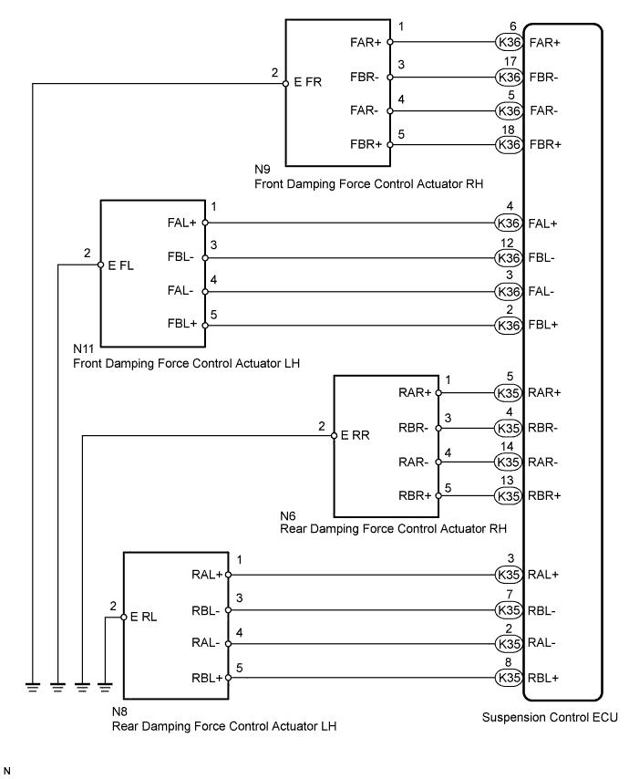
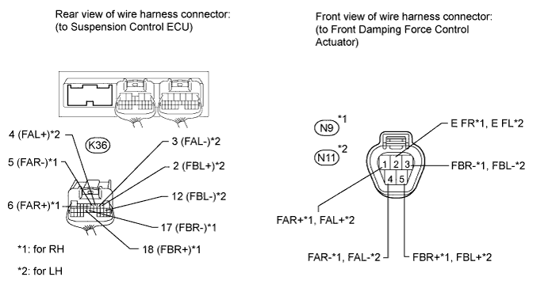
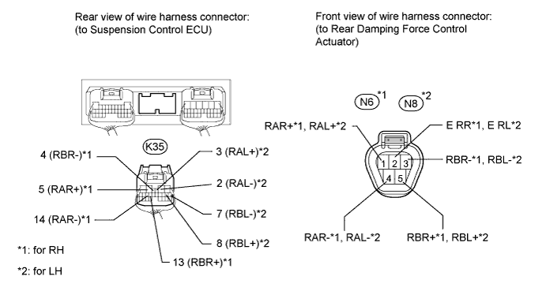
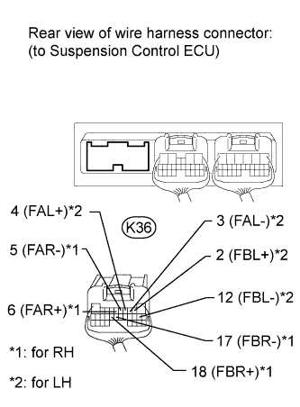
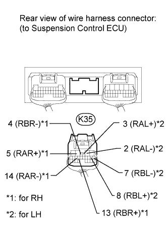

DTC C1731 Front Damping Force Control Actuator RH Circuit Malfunction |
DTC C1732 Front Damping Force Control Actuator LH Circuit Malfunction |
DTC C1733 Rear Damping Force Control Actuator RH Circuit Malfunction |
DTC C1734 Rear Damping Force Control Actuator LH Circuit Malfunction |
| DTC Code | Detection Condition | Trouble Area |
| C1731 | When either of the following is detected:
|
|
| C1732 | When either of the following is detected:
|
|
| C1733 | When either of the following is detected:
|
|
| C1734 | When either of the following is detected:
|
|

| 1.PERFORM ACTIVE TEST USING INTELLIGENT TESTER (DAMPER STEP) |
According to the display on the intelligent tester, perform the Active Test.
Check if the damping force control actuator operates in accordance with the Active Test.
| Tester Display | Test Part | Control Range | Diagnostic Note |
| Damper Step FR | Changes front damper RH step | min.: 1 step max.: 16 step | The Damper Step item of the Data List changes to the step selected in the Active Test. |
| Damper Step FL | Changes front damper LH step | min.: 1 step max.: 16 step | The Damper Step item of the Data List changes to the step selected in the Active Test. |
| Damper Step RR | Changes rear damper RH step | min.: 1 step max.: 16 step | The Damper Step item of the Data List changes to the step selected in the Active Test. |
| Damper Step RL | Changes rear damper LH step | min.: 1 step max.: 16 step | The Damper Step item of the Data List changes to the step selected in the Active Test. |
|
| ||||
| OK | |
| 2.RECONFIRM DTC OUTPUT |
Clear the DTCs (Click here).
Perform a road test.
Check for DTCs.
| Result | Proceed to |
| DTC is output | A |
| DTC is not output | B |
|
| ||||
| A | |
| 3.CHECK HARNESS AND CONNECTOR (DAMPING FORCE CONTROL ACTUATOR - SUSPENSION CONTROL ECU) |
Check the front side damping force control actuator.
Disconnect the N9 and/or N11 actuator connector.
Disconnect the K36 ECU connector.

Measure the resistance according to the value(s) in the table below.
| Tester Connection | Condition | Specified Condition |
| K36-5 (FAR-) - N9-4 (FAR-) | Always | Below 1 Ω |
| K36-5 (FAR-) - Body ground | Always | 10 kΩ or higher |
| K36-6 (FAR+) - N9-1 (FAR+) | Always | Below 1 Ω |
| K36-6 (FAR+) - Body ground | Always | 10 kΩ or higher |
| K36-17 (FBR-) - N9-3 (FBR-) | Always | Below 1 Ω |
| K36-17 (FBR-) - Body ground | Always | 10 kΩ or higher |
| K36-18 (FBR+) - N9-5 (FBR+) | Always | Below 1 Ω |
| K36-18 (FBR+) - Body ground | Always | 10 kΩ or higher |
| N9-2 (E FR) - Body ground | Always | Below 1 Ω |
| Tester Connection | Condition | Specified Condition |
| K36-2 (FBL+) - N11-5 (FBL+) | Always | Below 1 Ω |
| K36-2 (FBL+) - Body ground | Always | 10 kΩ or higher |
| K36-3 (FAL-) - N11-4 (FAL-) | Always | Below 1 Ω |
| K36-3 (FAL-) - Body ground | Always | 10 kΩ or higher |
| K36-4 (FAL+) - N11-1 (FAL+) | Always | Below 1 Ω |
| K36-4 (FAL+) - Body ground | Always | 10 kΩ or higher |
| K36-12 (FBL-) - N11-3 (FBL-) | Always | Below 1 Ω |
| K36-12 (FBL-) - Body ground | Always | 10 kΩ or higher |
| N11-2 (E FL) - Body ground | Always | Below 1 Ω |
Check the rear side damping force control actuator.
Disconnect the N6 and/or N8 actuator connector.
Disconnect the K35 ECU connector.

Measure the resistance according to the value(s) in the table below.
| Tester Connection | Condition | Specified Condition |
| K35-4 (RBR-) - N6-3 (RBR-) | Always | Below 1 Ω |
| K35-4 (RBR-) - Body ground | Always | 10 kΩ or higher |
| K35-5 (RAR+) - N6-1 (RAR+) | Always | Below 1 Ω |
| K35-5 (RAR+) - Body ground | Always | 10 kΩ or higher |
| K35-13 (RBR+) - N6-5 (RBR+) | Always | Below 1 Ω |
| K35-13 (RBR+) - Body ground | Always | 10 kΩ or higher |
| K35-14 (RAR-) - N6-4 (RAR-) | Always | Below 1 Ω |
| K35-14 (RAR-) - Body ground | Always | 10 kΩ or higher |
| N6-2 (E RR) - Body ground | Always | Below 1 Ω |
| Tester Connection | Condition | Specified Condition |
| K35-2 (RAL-) - N8-4 (RAL-) | Always | Below 1 Ω |
| K35-2 (RAL-) - Body ground | Always | 10 kΩ or higher |
| K35-3 (RAL+) - N8-1 (RAL+) | Always | Below 1 Ω |
| K35-3 (RAL+) - Body ground | Always | 10 kΩ or higher |
| K35-7 (RBL-) - N8-3 (RBL-) | Always | Below 1 Ω |
| K35-7 (RBL-) - Body ground | Always | 10 kΩ or higher |
| K35-8 (RBL+) - N8-5 (RBL+) | Always | Below 1 Ω |
| K35-8 (RBL+) - Body ground | Always | 10 kΩ or higher |
| N8-2 (E RL) - Body ground | Always | Below 1 Ω |
|
| ||||
| OK | |
| 4.INSPECT DAMPING FORCE CONTROL ACTUATOR |
Check the front side damping force control actuator.
Connect the N9 and/or N11 front absorber control actuator connector.
 |
Disconnect the K36 ECU connector.
Measure the resistance according to the value(s) in the table below.
| Tester Connection | Condition | Specified Condition |
| K36-5 (FAR-) - Body ground | Always | 12.0 to 13.6 Ω |
| K36-6 (FAR+) - Body ground | Always | 12.0 to 13.6 Ω |
| K36-17 (FBR-) - Body ground | Always | 12.0 to 13.6 Ω |
| K36-18 (FBR+) - Body ground | Always | 12.0 to 13.6 Ω |
| Tester Connection | Condition | Specified Condition |
| K36-2 (FBL+) - Body ground | Always | 12.0 to 13.6 Ω |
| K36-3 (FAL-) - Body ground | Always | 12.0 to 13.6 Ω |
| K36-4 (FAL+) - Body ground | Always | 12.0 to 13.6 Ω |
| K36-12 (FBL-) - Body ground | Always | 12.0 to 13.6 Ω |
Check the rear side damping force control actuator.
Connect the N6 and/or N8 rear absorber control actuator connector.
 |
Disconnect the K35 ECU connector.
Measure the resistance according to the value(s) in the table below.
| Tester Connection | Condition | Specified Condition |
| K35-4 (RBR-) - Body ground | Always | 12.0 to 13.6 Ω |
| K35-5 (RAR+) - Body ground | Always | 12.0 to 13.6 Ω |
| K35-13 (RBR+) - Body ground | Always | 12.0 to 13.6 Ω |
| K35-14 (RAR-) - Body ground | Always | 12.0 to 13.6 Ω |
| Tester Connection | Condition | Specified Condition |
| K35-2 (FAL-) - Body ground | Always | 12.0 to 13.6 Ω |
| K35-3 (RAL+) - Body ground | Always | 12.0 to 13.6 Ω |
| K35-7 (RBL-) - Body ground | Always | 12.0 to 13.6 Ω |
| K35-8 (RBL+) - Body ground | Always | 12.0 to 13.6 Ω |
| Result | Proceed to |
| OK | A |
| Front damping force control actuator RH malfunction | B |
| Front damping force control actuator LH malfunction | C |
| Rear damping force control actuator RH malfunction | D |
| Rear damping force control actuator LH malfunction | E |
|
| ||||
|
| ||||
|
| ||||
|
| ||||
| A | ||
| ||